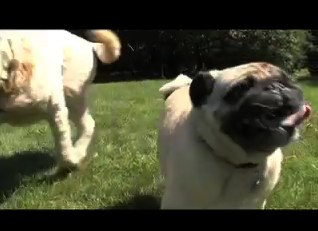

Catie Curtis (website) has been a fan favorite on the acoustic music scene
for a number of years now. Her well-deserved reputation as one of our
very best singer/songwriters has followed her through nine
critically-acclaimed recordings. With her tenth and newest project,
Hello Stranger, released in August 2009, she gifts her loyal fan base
and entices new listeners with a recording that captures some of the
magic of her live performances. With the help of her
Nashville-based record label, Compass Records, she selected a few of
Nashville's best musicians to make an album featuring fiddle,
mandolin and banjo as well as acoustic guitar.
Curtis has created a dedicated following that has
grown steadily over the course of her 15-year career. With her
live shows, film and tv placements, the 2006 International Songwriting
Competition Grand Prize, and now the Hello Stranger string-band
project, Curtis has proven that she's the real deal: a musician
with the kind of raw talent and artistic maturity that makes her a
force to be reckoned with, albeit a sweet force.
|
 Happy video |
Compass Records • 916 19th Avenue South • Nashville Tennessee 37212 (615) 320-7672 • Fax (615) 320-7378 | |
|
Press: stephanie@compassrecords.com Radio: radio@compassrecords.com Retail: thad@compassrecords.com http://www.compassrecords.com | ||